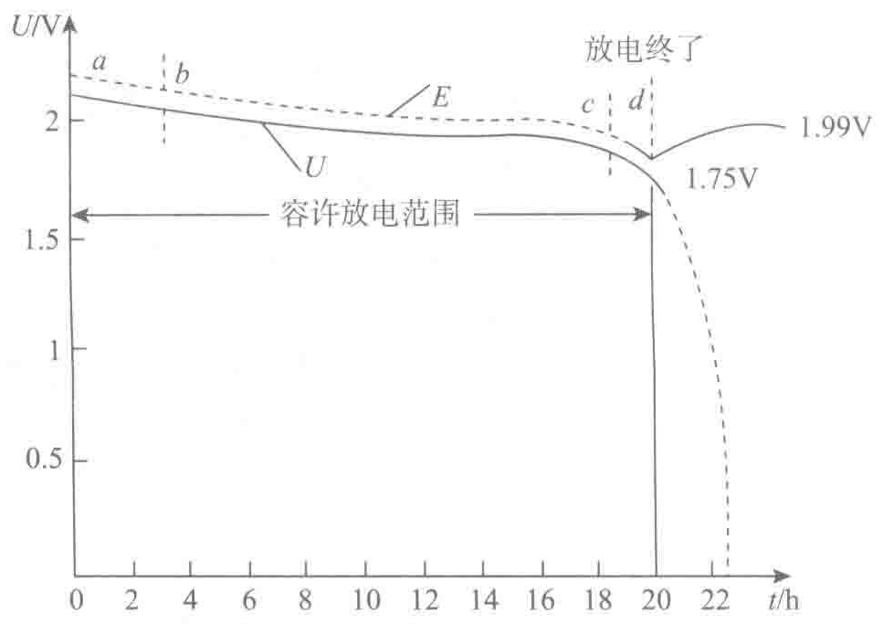

止电压控制，长时间小电流放电，直至电压很低。实践证明过量地放电会导致蓄电池极板遭受严重损伤，使蓄电池寿命显著缩短。

在蓄电池维护使用过程中，要严格控制蓄电池的过放电。一般大中型UPS电源的控制电路中都有蓄电池放电终了自动关闭电路。
（3）控制蓄电池过量的自放电
自放电过量也是蓄电池常见的故障，它使蓄电池性能恶化，甚至不能工作。铅酸蓄电池在正常情况下，都存在不同程度的自放电现象，但是放电率很慢。通常情况下，在充电后15个昼夜，平均每天损失量是额定容量的0.5%为正常（指普通型铅酸蓄电池），如果超过这个规定值就是过量自放电。在UPS电源的正常维护中应采取积极措施，预防这类故障的发生。造成过量自放电的原因和应采取的预防措施如下：
a）铅酸蓄电池过量自放电的主要原因是其内部含有杂质。这些杂质主要来自电解液。为了保持蓄电池电解液的纯度，配制电解液时，使用蒸馏水和化学纯硫酸。若胶体电解液要加入水时，加的只能是蒸馏水，不能用普通水。
b）环境温度过高是引起自放电过量的第二个原因，温度高使蓄电池自放电增强。从图3-32中可以看出温度的高低与自放电的关系，以及与蓄电池搁置时间的关系。
长期不用的蓄电池除了定期充放电外，夏季应放在30℃以下的环境中。从下表中可以看出，如果温度超过50℃，蓄电池在2.5个月内就能自放电终止了，如果不及时充电激活，蓄电池将会报废。
c）影响自放电的第三个原因是蓄电池表面正负极之间存在灰尘、盐类、电解液时都会由于外部漏电引起过量自放电。为了避免这类过量自放电，应该使蓄电池表面保持干燥、清洁，杜绝漏电。
（4）有下列情况之一应及时对蓄电池进行均衡充电：
- 过量放电使得蓄电池端电压低于规定的终止电压时。根据实际运维经验，对于12V